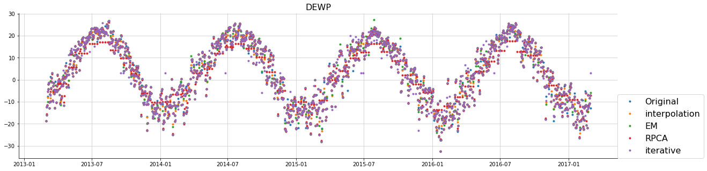
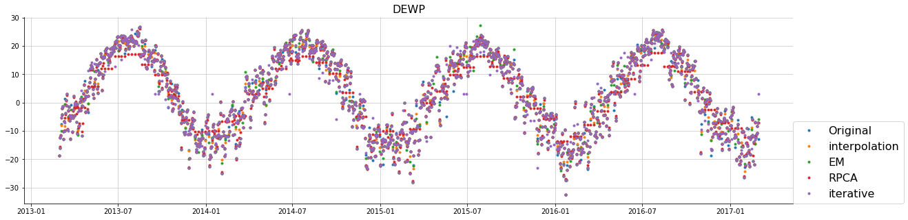

Imputation examples
In this example, we’ll show how to use qolmat API to impute a mutlivariate time series and to compare the different imputation methods.
First, import some usefull libraries and functions
import pandas as pd
import numpy as np
np.random.seed(42)
import pprint
from matplotlib import pyplot as plt
import sys
from qolmat.benchmark import comparator
from qolmat.imputations import models
from qolmat.utils import data
from qolmat.imputations.em_sampler import ImputeEM
from sklearn.linear_model import LinearRegression
from sklearn.ensemble import RandomForestRegressor, ExtraTreesRegressor, HistGradientBoostingRegressor
Then we prepare the dataset to impute. It consists in the Air Quality Data Set freely available (here). This is a multivaraite time series and it contains the responses of a gas multisensor device deployed on the field in an Italian city. Hourly responses averages are recorded along with gas concentrations references from a certified analyzer. The last two lines are necessary because of the implemented models require dataframe with at least a “datetime” index.
download = True
dataset = data.get_data(download=download)
cols_to_impute = ["TEMP", "PRES", "DEWP"]
dataset.reset_index(inplace=True)
dataset.set_index(["station", "datetime"], inplace=True)
Then we create some missing entries.
df_corrupted = df[cols_to_impute].copy()
p = 0.17
mask_temp = np.random.choice(a=[False, True], size=(len(df_corrupted),), p=[p, 1-p])
p = 0.67
mask_pres = np.random.choice(a=[False, True], size=(len(df_corrupted),), p=[p, 1-p])
p = 0.7
mask_dewp = np.random.choice(a=[False, True], size=(len(df_corrupted),), p=[p, 1-p])
masks = {cols_to_impute[0]: df_corrupted.index, cols_to_impute[1]: mask_pres, cols_to_impute[2]: mask_dewp}
df_corrupted.loc[mask_pres, "TEMP"] = np.nan
df_corrupted.loc[mask_pres, "PRES"] = np.nan
df_corrupted.loc[mask_dewp, "DEWP"] = np.nan
Once we have a dataframe with missign values, we can define multiple imputation methods. Some methods take arguments. For instance, if we want to impute by the mean, we can specify some groups.
Here, in the
ImputeByMean, we specifygroups=["datetime.dt.month", "datetime.dt.dayofweek"], which means the method will first use a groupby operation (viapd.DataFrame.groupby) and then impute missing values with the mean of their corresponding group.For the
ImputeByInterpolation, the method can be anything supported bypd.Series.interpolate; hence forsplineandpolynomial, we have to provide anorder.For the
ImputeRPCA, we first need to specify themethod, i.e.PCP,TemporalorOnline. It is also mandatory to mention if we deal with multivariate or not. Finally, there is a set of hyperparameters that can be specify. See the doc “Focus on RPCA” for more information.For the
ImputeEM, we can specify the maximum number of iterations or the strategy used, i.e. “sample” or “argmax” (By default, “sample”). See the doc “Focus on EM Sampler” for more information.For the
ImputeIterative, we can specify the regression model to use, with its own hyperparameters.For the
ImputeRegressorandImputeStochasticRegressor, we can specify the regression model to use, with its own hyperparameters as well as the name of the columns to impute.
If the method requires hyperparameters, the user can either define them himself or define a search space for each of them.
In the latter case, he has to define a dictionay called search_params with the following structure:
{"object_name" : {"hyperparam_name": hyperparam_name : {"min": min, "max": max, type: type}} if a Integer or Real hyperparameter,
{"object_name" : {"hyperparam_name": hyperparam_name : {"categories": [category], "max": max, type: type}} if it is a Categorical hyperparameter.
In this way, the algorithms will use a cross-validatino to find and save the best hyperparameters that minimise an error reconstruction (L1 or L2).
imputer_interpol = models.ImputeByInterpolation(method="polynomial", order=2)
imputer_rpca = models.ImputeRPCA(
method="temporal", multivariate=False, **{"n_rows":7*4, "maxIter":1000, "tau":1}
)
imputer_em = ImputeEM(n_iter_em=14, n_iter_ou=10, verbose=1)
imputer_iterative = models.ImputeIterative(
**{"estimator": LinearRegression(), "sample_posterior": False, "max_iter": 100, "missing_values": np.nan}
)
search_params = {
"ImputeKNN": {"k": {"min":2, "max":3, "type":"Integer"}},
"ImputeRPCA": {
"lam": {"min": 0.5, "max": 1, "type":"Real"},
}
}
dict_models = {
"interpolation": imputer_interpol,
"EM": imputer_em,
"RPCA": imputer_rpca,
"iterative": imputer_iterative,
}
In order to compare the different methods, we use the Comparator class.
We have to provide the prop_nan parameter which is the fraction of values we want to set to nan in each sample.
This comparator also takes an optional argument n_samples, for the number of dataframes to generated with artificially missing data.
The results could inform us about the best method to choose.
Warning
The main pitfall of this strategy is the fact that it depends on the true missing values. Indeed, since they are always part of the missing entries, the reconstruction is always done conditionnaly to them. This can be problematic when missing entries are not completely at random.
prop_nan = 0.05
comparison = comparator.Comparator(
df_corrupted,
prop_nan,
dict_models,
cols_to_impute,
n_samples=4,
search_params=search_params,
)
results = comparison.compare()
results

Finally, if we only want to impute (without a quantitative comparison), we can just use the fit_transofrm
function of each methods. We are then able to visually appreciate the imputations.
dfs_imputed = {name: imp.fit_transform(df_corrupted) for name, imp in dict_models.items()}
city = "Aotizhongxin"
for col in cols_to_impute:
plt.figure(figsize=(20, 5))
df = dataset.loc[city]
plt.plot(df[col], ".", label="Original")
for name, model in list(dict_models.items()):
plt.plot(dfs_imputed[name].loc[city][col], ".", label=name)
plt.title(col, fontsize=16)
plt.legend(loc=[1, 0], fontsize=16)
plt.show()
 

For other vizualiations, we can for instance compare the distributions 2 by 2.
for imputation_method in dict_models.keys():
fig, axs = plt.subplots(1, 3, figsize=(20, 5))
for i in range(3):
data.compare_covariances(dataset.loc[city, cols_to_impute], dfs_imputed[imputation_method], cols_to_impute[i], cols_to_impute[(i+1)%3], axs[i])
axs[1].set_title(f"{imputation_method}", fontsize=20)


Another quantity of interest could be the coefficient of determination.
from sklearn.metrics import r2_score
r2_scores = []
for name, df in dfs_imputed.items():
r2_scores_ = []
for col in cols_to_impute:
r2_scores_.append(r2_score(dataset.loc[city, col].dropna(how="all"), df[col].ffill().bfill()))
r2_scores.append(r2_scores_)
r2_scores = pd.DataFrame(r2_scores, index=dfs_imputed.keys(), columns=cols_to_impute)
r2_scores

For time series, it is sometimes interesting to plot the autocorrelation function.
from statsmodels.tsa.stattools import acf
fig, axs = plt.subplots(1, 3, figsize=(20, 5))
for i, col in enumerate(cols_to_impute):
axs[i].plot(acf(dataset.loc[city, col].dropna()), color="k")
for name, df in dfs_imputed.items():
axs[i].plot(acf(df[col]))
axs[i].set_xlabel("Lags [days]")
axs[i].set_ylabel("Correlation")
axs[i].set_ylim([0.5, 1])
axs[i].set_title(col)
axs[-1].legend(["Original dataset"] + list(dfs_imputed.keys()), loc=[1, 0])

Finally, let’s compare the distribution by means of KL divergence.
kl_divergences = []
for name, df in dfs_imputed.items():
kl_divergences_ = []
for col in cols_to_impute:
kl_divergences_.append(data.KL(dataset.loc[city, col].dropna(how="all"), df[col].ffill().bfill()))
kl_divergences.append(kl_divergences_)
kl_divergences = pd.DataFrame(kl_divergences, index=dfs_imputed.keys(), columns=cols_to_impute)
kl_divergences